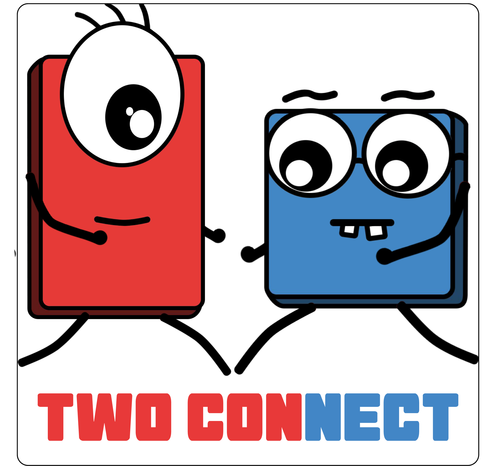

Two Connect
Two Connect is a game for Android mobile phones developed in the Unity Game Engine. It is a puzzle game in which you solve puzzles with the magnetic powers of two sentient monopoles.
- Genre: Puzzle
- Engine: Unity Game Engine
- Role(s): Gameplay Programmer
- Team Size: 5
- Development Time: 5 months
Game was released to the Game Store in 2022, is removed by now.
My Contributions
Programming
Implementation of multiple different Gameplay elements like: Jumping Pad and Movement
Implemenation of a fix for a stuttering framerate on Mobile under Unity version 2021.3.22f1
Retrospective and Learnings
Two Connect was developed during my 4th semester at Hochschule Harz. Back then I was relatively inexperienced in both Programming and Game Development, so developing and releasing a game to the Play Store was a daunting task. I was working together with another programming student, while others handled the Game Design, Audio and so on.Looking back on it, it was one of the greatest learning experiences, not in terms of Engine or Language knowledge, but in terms of working philosophy and ethic. Due to a limited timeframe, we took a lot of shortcuts. For Example, instead of writing an actual magnetism script, we looked at any way we could 'simulate' magnetism. Since you get what you paid for, the game is in a playable state, but that is all. It is not particularly fun or exciting. Even the puzzle aspects are mediocre at best.
But why display this project here? I think it is important to even show things, that did not go as well. It is nice to have the clean an polished experiences, but usually those are not the ones you learn the most from. The failures are where the learning experiences are at and thus this project deserves its spot as one of my greatest learning experiences in my studies.
Learnings from this project
- Do something properly from the beginning and a proper result shall follow
- Shortcuts in Development can lead to barriers for Game Design, hence blocking emergent Gameplay
- Basics in Unity Physics and Interactions
- Basic Structures around releasing a project to the Google Play Store